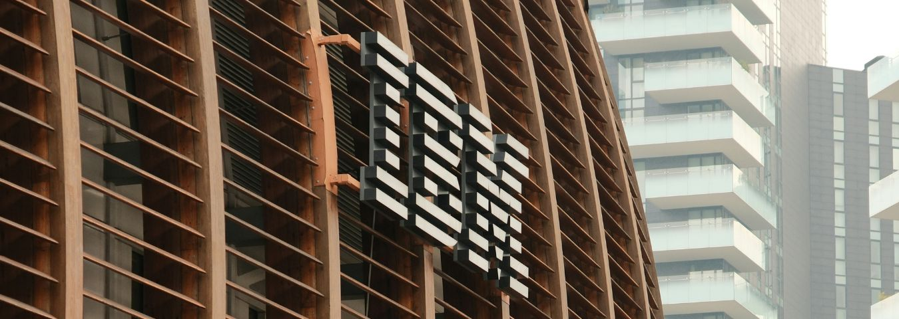
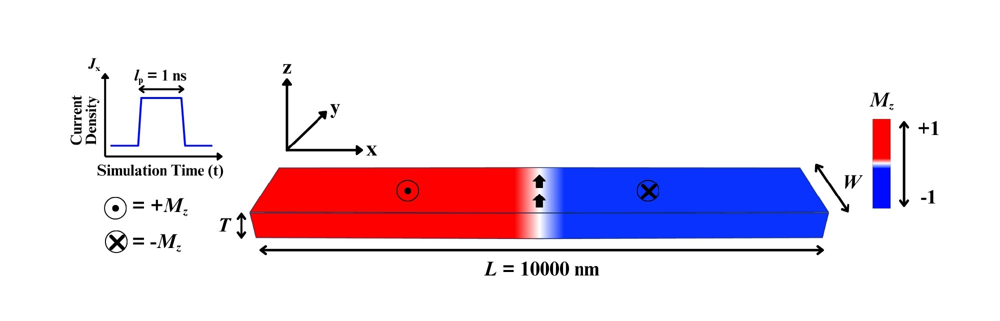
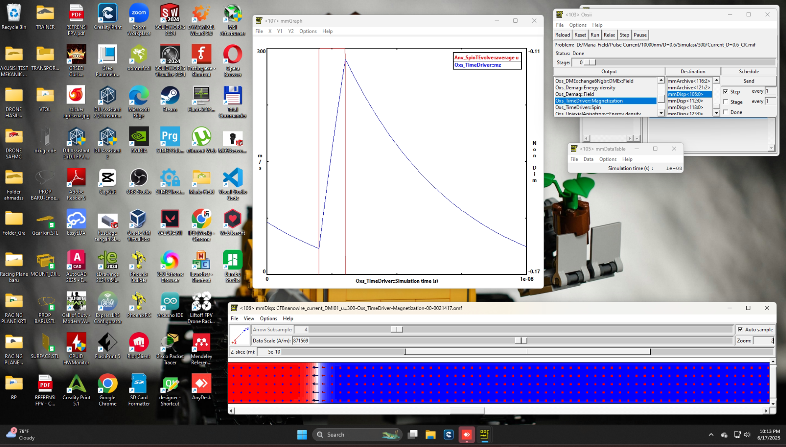
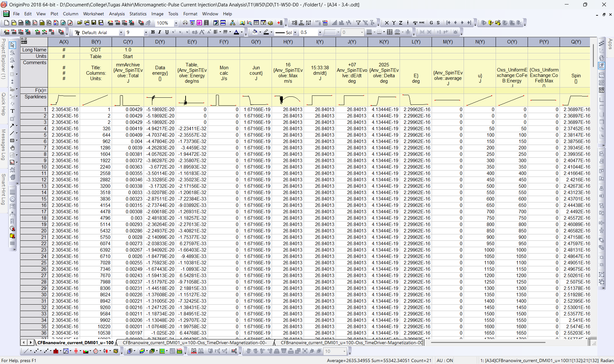
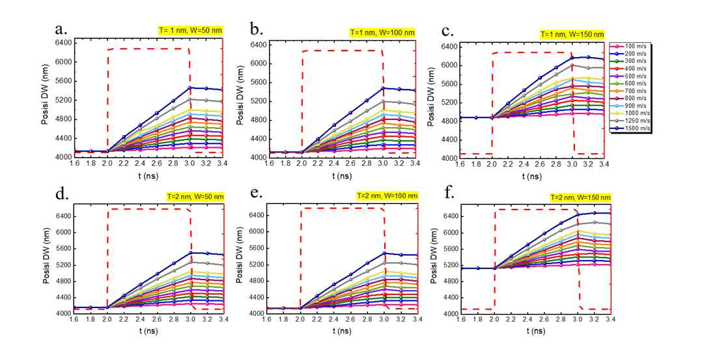
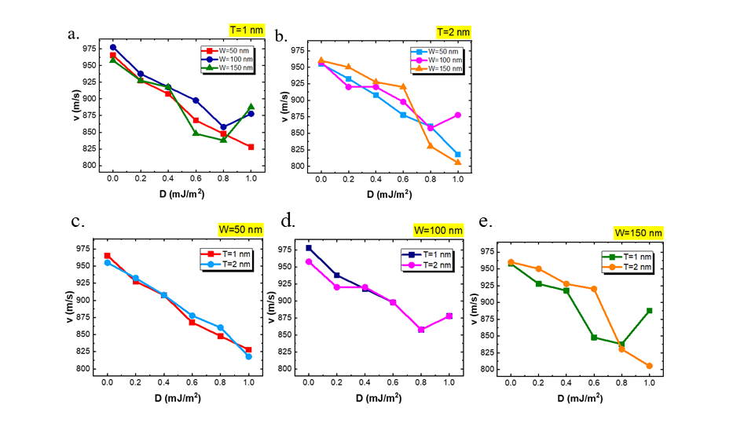
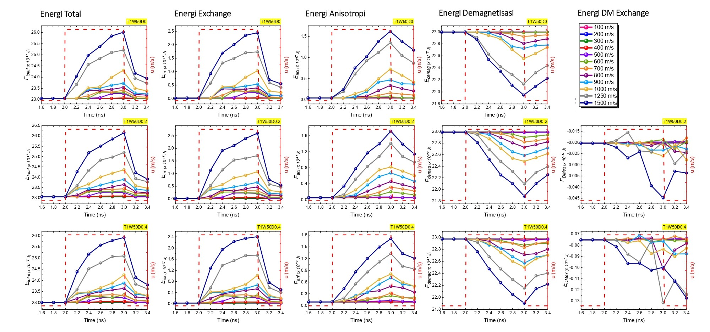

Micromagnetic Simulation for Spintronic Data Storage
Overview
Conducted computational physics research at the National Research and Innovation Agency (BRIN) as part of my undergraduate thesis and professional experience, forming the basis for an upcoming scientific manuscript. The work examined how nanowire dimensions and Dzyaloshinskii-Moriya Interaction (DMI) configurations influence domain wall dynamics in spintronic data storage. I performed 468 micromagnetic simulations using OOMMF and analyzed position, velocity, and energy data, producing structured reports and visualizations that informed research insights and supported the manuscript preparation.
Project Status
This project is currently in the process of preparing a manuscript for a conference, so the complete results cannot be shared at this time. However, part of the analysis has been completed as part of my undergraduate thesis, including preliminary data and visualizations that provide insights into domain wall performance trends in nanowires.
Technical Workflow
This project was conducted using a structured micromagnetic simulation workflow, designed to ensure physical validity, numerical stability, and reproducible data analysis. The overall process integrates physical modeling, numerical simulation, and quantitative post-processing.
1. Physical Modeling
The system was modeled within the continuum micromagnetic framework, where the magnetization dynamics are governed by the Landau–Lifshitz–Gilbert (LLG) equation enhanced with Dzyaloshinskii–Moriya Interaction (DMI). Energy contributions include exchange, perpendicular magnetic anisotropy (PMA), demagnetization, and DMI.
2. Geometry and Material Configuration
Co40Fe40B20 nanowires with perpendicular magnetic anisotropy were modeled with fixed length and varying widths and thicknesses. The simulation cell size was chosen to be smaller than the magnetic exchange length, ensuring numerical accuracy.

Figure 1. Schematic of the Co₄₀Fe₄₀B₂₀ nanowire geometry used in the micromagnetic simulations.
The nanowire has a fixed length of L = 10 µm, with varying width (W) and thickness (T) under perpendicular magnetic anisotropy (PMA). The color scale represents the out-of-plane magnetization component (Mz), where red and blue correspond to +Mz and −Mz states, respectively. A transverse domain wall initially separates oppositely magnetized domains. Nanosecond-scale current pulses (Ip = 1 ns) are injected along the x-direction to drive current-induced domain wall motion, while the Cartesian coordinate system used in the simulations is shown for reference.
3. Simulation Execution
All simulations were performed using OOMMF. The initial domain wall was defined as a Bloch wall and relaxed to its ground state. Due to DMI, the domain wall naturally transformed into a chiral Néel wall before current-driven dynamics were applied.
4. Current-Induced Dynamics
Nanosecond-scale current pulses were injected along the nanowire axis. Spin-transfer torque was incorporated into the LLG equation to drive domain wall motion. The domain wall behavior was analyzed during and after the current pulse to evaluate propagation stability.

Figure 2. Simulation Execution Example.
Data Processing Pipeline
The data processing workflow was designed to be quantitative, reproducible, and minimally dependent on visual interpretation. All results were derived directly from numerical magnetization data.
1. Simulation Output
OOMMF generated time-resolved magnetization files (.omf) containing spatial
distributions of the magnetization components (Mx, My, and Mz), along with auxiliary
output files (.odt) primarily used for energy analysis.

Figure 3. Raw OOMMF output files displayed using Notepad++ (.omf).

Figure 4. Raw OOMMF output files displayed using OriginPro (.odt).
2. Data Conversion and Extraction
OOMMF magnetization files (.omf) were converted into tabular format (.odt) to enable precise identification of domain wall positions at specific times.
Although OOMMF directly generates .odt files during simulations, these outputs are
primarily suitable for energy analysis and cannot be reliably used to determine domain wall
position or velocity. During current-driven simulations, domain wall nucleation may occur,
leading to the formation of additional domain walls that obscure the motion of the original one.
To avoid this ambiguity, domain wall positions were extracted from spatial magnetization profiles
at selected time steps (1.6 ns to 3.4 ns), enabling accurate time-resolved analysis.
3. Domain Wall Position Identification
The domain wall position was determined from the zero-crossing of the Mz component along the nanowire axis. This method provides higher robustness than direct snapshot inspection.

Figure 5. Domain wall position comparison under current injection for different nanowire geometries.
Panels (a–c) show DW positions for nanowire widths W = 50 nm, 100 nm, and 150 nm, respectively when T = 1 nm. Panels (d–f) show DW positions for nanowire widths W = 50 nm, 100 nm, and 150 nm, respectively when T = 2 nm. All simulations were performed at D = 0.6 mJ/m2 and u = 1000 m/s.
4. Velocity and Energy Analysis
Domain wall velocity was obtained from linear fits of position–time data during the current-on regime. Energy evolution—including exchange, anisotropy, demagnetization, and DMI—was analyzed to identify stable and transient dynamic regimes.

Figure 6. Domain wall velocity comparison under current injection for different nanowire geometries
Panels (a–b) compare DW velocities for thicknesses T = 1 nm and 2 nm. Panels (c–e) show DW velocity for nanowire widths W = 50 nm, 100 nm, and 150 nm, respectively. All simulations were performed at all D variations and spin drift velocity u = 1000 m/s.

Figure 7. Energy Evolution Graphs Showing Exchange, Anisotropy, Demagnetization, DMI, and Total Energy During Current-Induced Domain Wall Motion with D=0 mJ/m2 (T=1 nm & W=50 nm).
5. Visualization and Validation
ImageJ was used to validate domain wall structures (Bloch versus Néel), while Origin was employed to generate consistent, publication-ready plots for final analysis and reporting.

Figure 8. The Animation of Magnetization process during the ground-state simulation of a nanowire with D = 0.6 mJ/m2. The magnetization configuration is obtained from micromagnetic simulation output and visualized using ImageJ.
6. Data Tabulation and Kinematic Analysis
Extracted domain wall positions were organized into tabulated datasets to calculate displacement and velocity as functions of time. Spreadsheet-based processing (Microsoft Excel) was used for preliminary data organization and linear fitting, while final plots and validation were performed using Origin to ensure consistency and publication-quality visualization.
Introduction
This concept was first proposed in the early 2000s by Dr. Stuart Parkin, a renowned physicist and researcher at the IBM Almaden Research Center. His fundamental paper on this technology was published in the journal Science in 2008. Parkin sought to create a "solid-state" device—one with no moving parts—that could rival the high storage density of magnetic disk platters.
This is my first research project with BRIN and Dr. Candra Kurniawan, M.Si., and I’m so excited about the topic. It is closely related to quantum and solid-state physics. This research gives me more time and opportunities to learn and improve my understanding.
HDDs and SSDs are non-volatile storage devices that retain data without power. HDDs use spinning platters and are slower than SSDs due to their mechanical components, which limit data access speed. In contrast, SSDs utilize semiconductor-based flash memory, offering significantly higher speed and reliability, albeit at a higher cost [1], [2]. However, SSDs have a limited lifespan due to the Program/Erase (P/E) cycle, although techniques such as wear leveling can extend their operational durability.
Current data storage technologies primarily rely on electrical charge, such as in silicon-based transistors. However, this approach faces fundamental limitations in terms of miniaturization, heat dissipation, and power efficiency as device dimensions approach the nanoscale. Spintronics provides an alternative paradigm by exploiting the electron’s spin degree of freedom instead of charge, enabling faster switching, lower energy consumption, and improved non-volatility [3], [4].
Racetrack Memory is an emerging spintronic storage technology in which digital information is represented by magnetic domains separated by domain walls that move along nanoscopic tracks [5]. A single racetrack can store multiple bits of data, enabling very high storage density. Domain walls are shifted using nanosecond-scale current pulses through mechanisms such as spin-transfer torque (STT) or spin–orbit torque (SOT), allowing high-speed data manipulation [6], [7]. In advanced systems such as synthetic antiferromagnetic racetracks, domain wall velocities can reach the order of ~1 km/s, demonstrating the potential for ultra-fast data transfer. Furthermore, optimized racetrack configurations have the potential to achieve sub-nanosecond operation speeds, making them denser and more efficient than conventional SRAM while maintaining non-volatility [8], [9].
Micromagnetic simulations play a crucial role in the development of racetrack memory, as they enable researchers to model and analyze domain wall dynamics without the need for costly physical prototypes. These simulations are typically based on the Landau–Lifshitz–Gilbert (LLG) equation, which describes the time evolution of magnetization under various physical interactions [13], [14]. Through simulation, researchers can optimize material properties, improve energy efficiency, enhance device durability, and refine writing and reading mechanisms. This approach significantly accelerates the development of racetrack memory as a faster, more efficient, and longer-lasting alternative to conventional storage technologies such as HDDs and SSDs [15], [16].
Figure 9. The Animation of Hard Disk Drive (HDD) and Racetrack Memory Comparison.
The animation illustrates the fundamental differences between traditional HDDs, which rely on mechanical spinning disks and read/write heads, and Racetrack Memory, which uses current-driven domain wall motion in nanowires to store and access data. Racetrack Memory offers higher speed, greater durability, and improved energy efficiency compared to HDDs.
Read/Write Process in Racetrack Memory
Conventional HDDs store data in magnetic domains formed by groups of microscopic grains with aligned magnetization [1, 2]. Racetrack Memory uses thin nanowires where bits are represented by sequential magnetic domains separated by domain walls (DWs) [5, 17].
Data is written by injecting a current through an injector, using spin-transfer torque (STT) to switch atomic magnetization and create new bits [11, 18, 19]. Domains are then shifted along the wire via current-induced domain wall motion (CIDWM), enabling rapid, mechanical-free data movement [6, 7].
Reading is done with magnetoresistance-based sensors, such as magnetic tunnel junctions (MTJs), which detect resistance changes depending on domain alignment and translate them into binary values [5, 10]. This allows high-speed, efficient data storage compared to conventional HDDs [5, 9].
Domain Wall Motion
Engineering the motion of domain walls (DW) is a key factor in the development of Racetrack Memory, as it enables high-density data storage in three-dimensional structures, high-speed operation, and low energy consumption due to the absence of moving mechanical parts [5], [8]. Moreover, the dynamics of domain walls exhibit similarities to biological synaptic mechanisms, opening opportunities for applications in spintronic-based neuromorphic computing [12].
Meanwhile, micromagnetic simulations using software such as OOMMF are employed to model magnetic behavior at microscopic scales that are difficult to observe directly in laboratory experiments. These simulations are based on the numerical solution of the Landau–Lifshitz–Gilbert (LLG) equation, which describes the dynamics of magnetization in ferromagnetic materials [13], [14].
Through these simulations, researchers can visualize domain wall dynamics as well as complex structures such as skyrmions on nanosecond timescales. This approach greatly facilitates the optimization of material design and spintronic devices efficiently before proceeding to costly physical fabrication stages [15], [16].
Methodology & Frameworks
Simulation Framework
Utilized OOMMF (Object Oriented MicroMagnetic Framework) to solve the Landau-Lifshitz-Gilbert (LLG) equation computationally.
Data Analytics
Processed and visualized massive datasets comprising domain wall velocities and magnetic energy states using Origin.
Key Impact
The quantitative analysis of DMI and nanowire geometric variables directly informs the architectural design of future highly-efficient spintronic memory devices (Racetrack Memory).
Reference
[1] Y. Chen and R. H. Victora, “Future prospects of magnetic recording technologies,” 2023.
[2] Y. Suzuki and Y. Takahashi, “Trends in high-density data storage technologies,” 2023.
[3] S. A. Wolf et al., “Spintronics: A spin-based electronics vision for the future,” Science, vol. 294, no. 5546, pp. 1488–1495, 2001.
[4] I. Žutić, J. Fabian, and S. Das Sarma, “Spintronics: Fundamentals and applications,” Reviews of Modern Physics, vol. 76, no. 2, pp. 323–410, 2004.
[5] S. S. P. Parkin, M. Hayashi, and L. Thomas, “Magnetic domain-wall racetrack memory,” Science, vol. 320, no. 5873, pp. 190–194, 2008.
[6] A. Thiaville et al., “Micromagnetic understanding of current-driven domain wall motion in patterned nanowires,” Europhysics Letters, vol. 69, no. 6, pp. 990–996, 2005.
[7] S.-H. Yang et al., “Domain-wall velocities of up to 750 m/s driven by exchange-coupling torque in synthetic antiferromagnets,” Nature Nanotechnology, vol. 10, pp. 221–226, 2015.
[8] S. S. P. Parkin and S.-H. Yang, “Memory on the racetrack,” Nature Nanotechnology, vol. 10, pp. 195–198, 2015.
[9] P. Barla et al., “Spintronic devices and advanced memory technologies: A review,” 2021.
[10] E. Chen et al., “Advances and future prospects of spin-transfer torque random access memory,” IEEE Transactions on Magnetics, vol. 46, no. 6, pp. 1873–1878, 2010.
[11] J. Grollier et al., “Spintronic devices for logic and memory applications,” 2011.
[12] J. Grollier, D. Querlioz, and M. D. Stiles, “Spintronic devices for neuromorphic computing,” Proceedings of the IEEE, vol. 104, no. 10, pp. 2024–2039, 2016.
[13] M. J. Donahue and D. G. Porter, OOMMF User’s Guide, NIST, 1999.
[14] T. L. Gilbert, “A phenomenological theory of damping in ferromagnetic materials,” IEEE Transactions on Magnetics, vol. 40, no. 6, pp. 3443–3449, 2004.
[15] J. M. D. Coey and S. S. P. Parkin, Magnetism and Magnetic Materials. Cambridge University Press, 2021.
[16] M. Diba et al., “Micromagnetic simulations for next-generation spintronic devices,” 2024.
[17] A. Hubert and R. Schäfer, Magnetic Domains: The Analysis of Magnetic Microstructures. Springer, 2009.
[18] J. C. Slonczewski, “Current-driven excitation of magnetic multilayers,” Journal of Magnetism and Magnetic Materials, vol. 159, pp. L1–L7, 1996.
[19] L. Berger, “Emission of spin waves by a magnetic multilayer traversed by a current,” Physical Review B, vol. 54, no. 13, pp. 9353–9358, 1996.